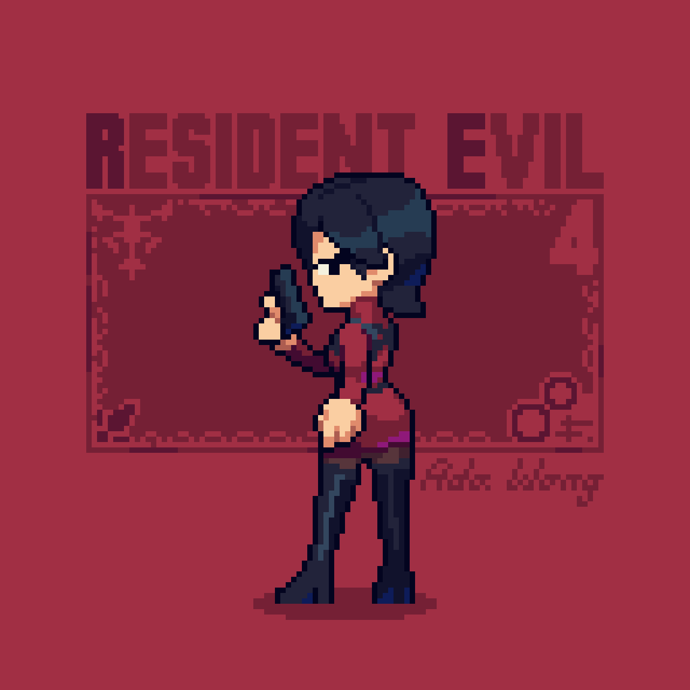

FLOR FAVORITA
El tulipán es una planta herbácea y bulbosa que se caracteriza por sus flores grandes y coloridas, con forma de copa y dispuestas en la punta de un tallo: Flor: La flor del tulipán es grande, globosa y tiene seis pétalos. Puede ser simple o doble, y sus colores pueden variar entre el blanco, el amarillo, el rojo, el rosa, el melocotón, el naranja, el lavanda, el púrpura y los bicolores. Tallo: El tallo del tulipán es liso y puede medir entre 40 y 60 cm de altura. Hojas: Las hojas del tulipán son grandes, radicales, enteras y lanceoladas. Bulbo: El bulbo del tulipán es truncado en la base y alargado en el ápice. Nombre: El nombre tulipán proviene del turco tülbend, que significa "turbante".
PELÍCULA FAVORITA
Resident Evil: Extinción (2007) es la tercera entrega de la saga cinematográfica basada en la franquicia de videojuegos "Resident Evil". Dirigida por Russell Mulcahy y protagonizada por Milla Jovovich como Alice, la película continúa la historia de un mundo postapocalíptico devastado por el brote del virus T, desarrollado por la Corporación Umbrella. La trama se sitúa varios años después de los eventos de las películas anteriores. El virus T ha destruido gran parte de la civilización, convirtiendo a la mayoría de los humanos en zombis. Los pocos sobrevivientes restantes vagan por el desierto en busca de un lugar seguro. Alice ha estado viajando sola debido a que se ha vuelto un objetivo de Umbrella, quienes la buscan por su ADN único, modificado genéticamente debido a su exposición al virus T. La corporación, ahora dirigida por el Dr. Isaacs (Iain Glen), quiere capturar a Alice para usarla en experimentos que podrían ayudar a controlar a los infectados. En el camino, Alice se encuentra con un convoy de sobrevivientes liderado por Claire Redfield (Ali Larter), quien incluye a personajes conocidos de las películas anteriores como Carlos Olivera (Oded Fehr) y L.J. (Mike Epps). El grupo de sobrevivientes decide dirigirse hacia Alaska, donde han escuchado rumores de una zona libre de infección. Sin embargo, el trayecto está lleno de peligros, tanto por los zombis como por las trampas y amenazas que se presentan en el desierto. Mientras tanto, el Dr. Isaacs lleva a cabo experimentos para crear zombis más controlables, y descubre que necesita el ADN de Alice para perfeccionar su investigación. Tras una serie de enfrentamientos, Isaacs se infecta accidentalmente con el virus y se transforma en un monstruo mutado. Alice y el grupo de sobrevivientes logran llegar al laboratorio de Umbrella en Nevada, donde se enfrenta a Isaacs en una batalla final. Al final, Alice derrota a Isaacs, pero descubre que Umbrella ha estado trabajando en clones de ella como parte de sus experimentos. La película concluye con Alice tomando la decisión de destruir Umbrella y liberar a los clones para usarlos en su lucha contra la corporación. "Resident Evil: Extinción" mezcla elementos de acción, terror y ciencia ficción, ofreciendo una visión más desolada y desesperada del mundo postapocalíptico, mientras expande la narrativa del personaje de Alice y su conexión con Umbrella.
HOBBIES FAVORITOS

Videojuegos
Me gusta jugar videojuegos porque es una forma increíble de desconectar del mundo real y sumergirme en experiencias completamente diferentes. Los videojuegos ofrecen la oportunidad de explorar mundos imaginarios, asumir roles fascinantes y enfrentar desafíos que ponen a prueba mis habilidades y creatividad. Además, me encanta cómo los juegos combinan gráficos impresionantes, música envolvente y mecánicas de juego innovadoras para crear una experiencia inmersiva. Otro aspecto que disfruto es la posibilidad de socializar con amigos o conocer a nuevas personas en línea, formando equipos y trabajando juntos para alcanzar metas comunes. Los videojuegos son una excelente manera de relajarse, divertirse y, al mismo tiempo, desarrollar habilidades como la resolución de problemas, la coordinación y la estrategia. Es una actividad que me mantiene entretenido y me reta constantemente a mejorar, lo que me resulta muy satisfactorio. 
Escuchar música
Me gusta escuchar música porque tiene el poder de cambiar mi estado de ánimo y transportarme a diferentes emociones y momentos. La música es una fuente constante de inspiración y energía; ya sea que esté buscando relajarme, concentrarme o motivarme, siempre encuentro una canción o género que se adapta a lo que necesito en ese momento. Me fascina cómo una melodía puede contar una historia sin palabras, o cómo una letra puede expresar sentimientos que a veces no sé cómo poner en palabras. Escuchar música me permite desconectar del mundo, pero al mismo tiempo conectarme más profundamente conmigo mismo. Además, cada estilo musical me ofrece algo único: desde la calma de la música instrumental hasta la energía de los ritmos más movidos. La música también es una forma de acompañar mis actividades diarias, haciendo que tareas rutinarias se vuelvan más amenas. Me gusta descubrir nuevos artistas y géneros, explorar diferentes culturas a través de sus sonidos, y cómo, de alguna manera, siempre encuentro algo con lo que puedo identificarme. Para mí, la música es una experiencia emocional que enriquece mi día a día.LUGARES FAVORITOS
Me gustan las casas en el bosque porque representan una conexión profunda con la naturaleza y una forma de escape del ritmo acelerado de la vida cotidiana. La idea de estar rodeado de árboles, el aire fresco y la tranquilidad del entorno me resulta muy atractiva. Las casas en el bosque ofrecen un ambiente de paz y serenidad que difícilmente se encuentra en la ciudad. Me encanta la sensación de aislamiento, donde el sonido del viento entre los árboles o el canto de los pájaros se convierte en la banda sonora del día. Además, la estética de una casa en el bosque tiene algo rústico y acogedor, una mezcla entre lo simple y lo elegante.

JUEGO FAVORITO
League of Legends (también conocido por sus siglas LoL) es un videojuego multijugador de arena de batalla en línea desarrollado y publicado por Riot Games. Inspirándose en Defense of the Ancients, un mapa personalizado para Warcraft III, los fundadores de Riot buscaron desarrollar un juego independiente del mismo género. Desde su lanzamiento en octubre de 2009, LoL ha sido un juego gratuito y se monetiza a través de la compra de elementos para la personalización de personajes y otros accesorios.

EDICIÓN DE IMAGEN
Aquí les presento un poco más del trabajo que he hecho en mi clase de Desarrollo de Interfaces Gráficas de Usuario, espero les guste y continuen navegando en la página